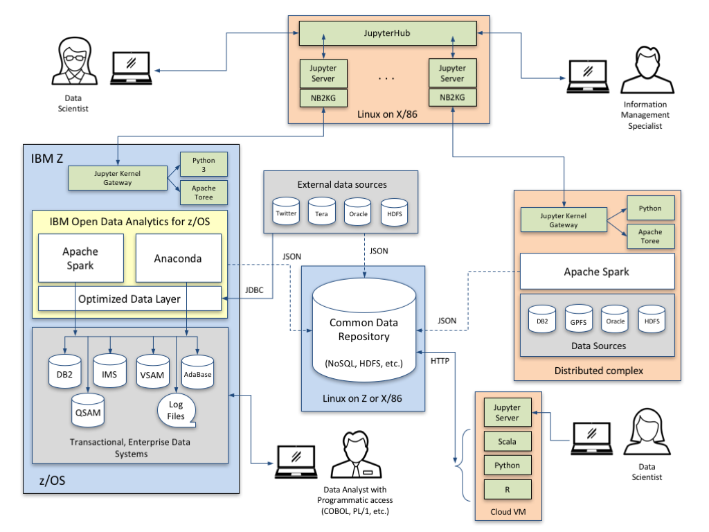

IBM Open Data Analytics for Z/OS (IzODA) is an assembly of key open source and proprietary technologies that allow data scientists and application developers to analyze and visualize the large volumes of data hosted on IBM Z.
Federate your IBM Z environment with your existing analytics infrastructure across platforms to bring compute capabilities to your original data sources. Avoid unnecessary data movement, duplication of data, and know that the privacy and security policies of your enterprise are being enforced.
Efficiently utilize the analytics skills of your organization by providing your data scientists with the most popular application and data visualization interfaces from the open source community. IzODA makes IBM Z look like any other data source or compute node to this audience so that they can focus on analysis instead of acquisition.
IzODA contains two of the most popular code stacks used by the data science community - Apache Spark and Anaconda, to analyze modern enterprise level volumes of data. The Optimized Data Layer provides unique data abstraction capabilities that allow data scientists to reach key data sources on and off the mainframe through a common interface.
IzODA works seamlessly with other compute nodes and ecosystem infrastructure to bring compute closer to original data sources and reduce the need for unnecessary data transfer. This minimizes wasted time and resource to perform Extract, Transform, and Load (ETL), while making results available to your common data repository of choice.
Access to Spark and Anaconda is generally handled through a set of open source packages that system administrators and developers assemble into interfaces used by data scientists. One of the most popular interfaces is the Jupyter Notebook.
The IzODA ecosystem includes additional companion projects that simplify the creation of these package assemblies, along with suggested configurations to enhance the security of the end-to-end analytics environment.
The Open Data Analytics Trial assists the user to target the data at its source of origin to gain analytic insight. You gain 100% complimentary, open access to an enterprise grade hardware environment for analytics.